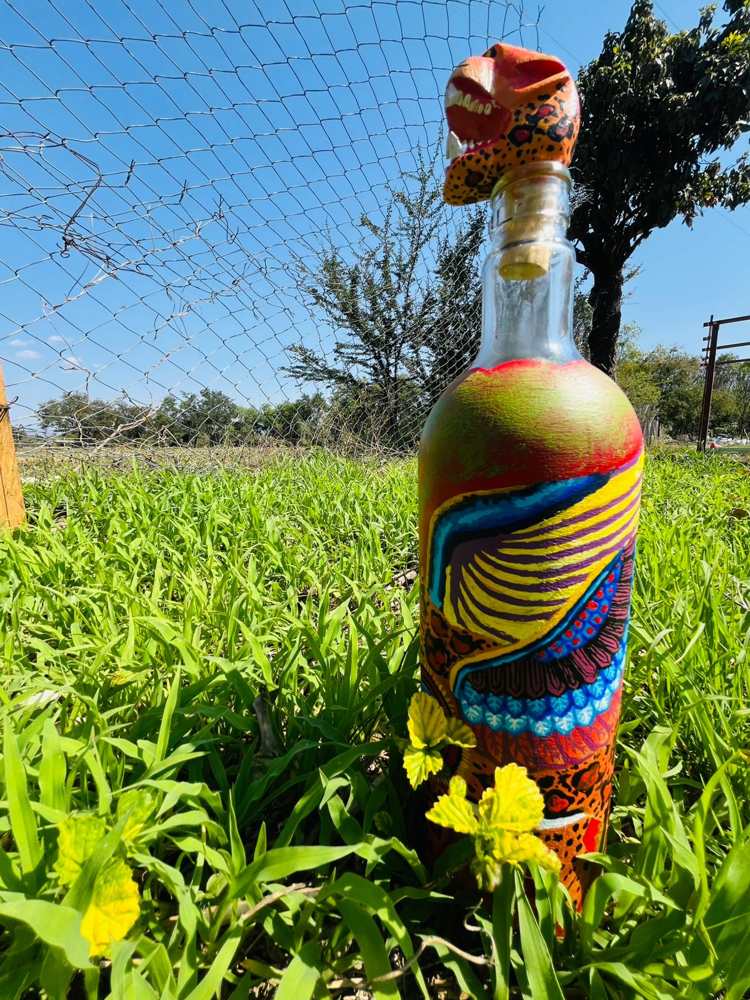
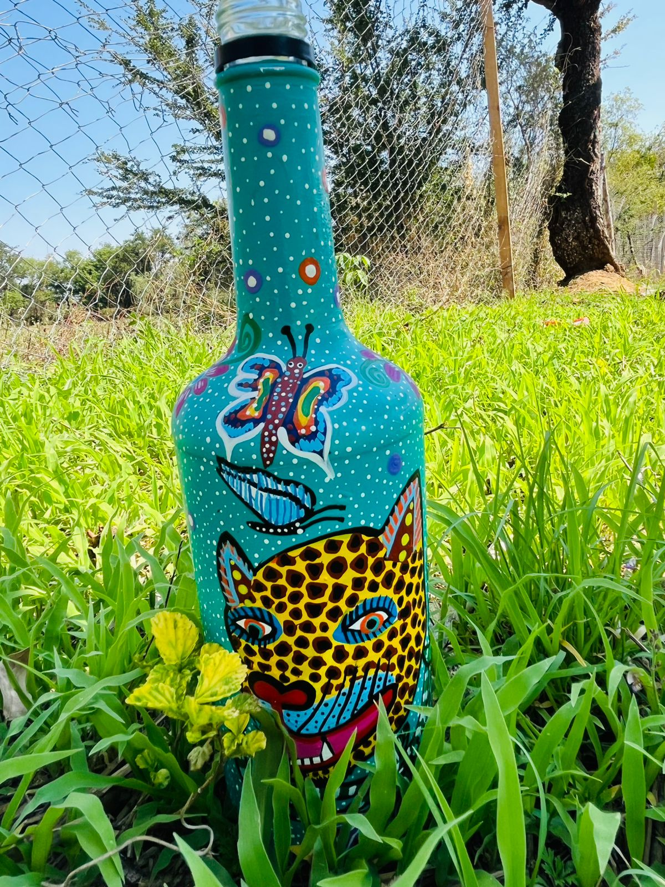
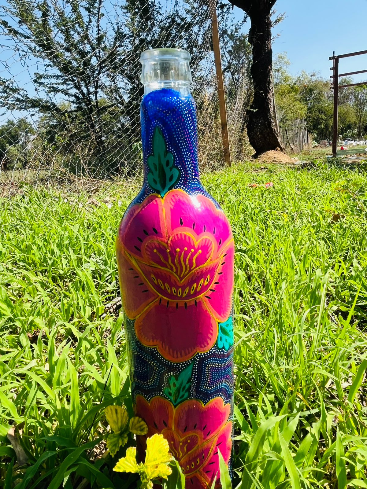

Con el objetivo de transformar residuos en objetos decorativos, se pintaron botellas con distintos diseños y colores. Estas piezas artesanales fueron vendidas a estudiantes, autoridades y vecinos de la comunidad a cambio de tapitas de plástico, las cuales serán donadas a la fundación "Con Causa" para apoyar a niños con cáncer, promoviendo así el reciclaje, la solidaridad y el valor de los productos sostenibles.